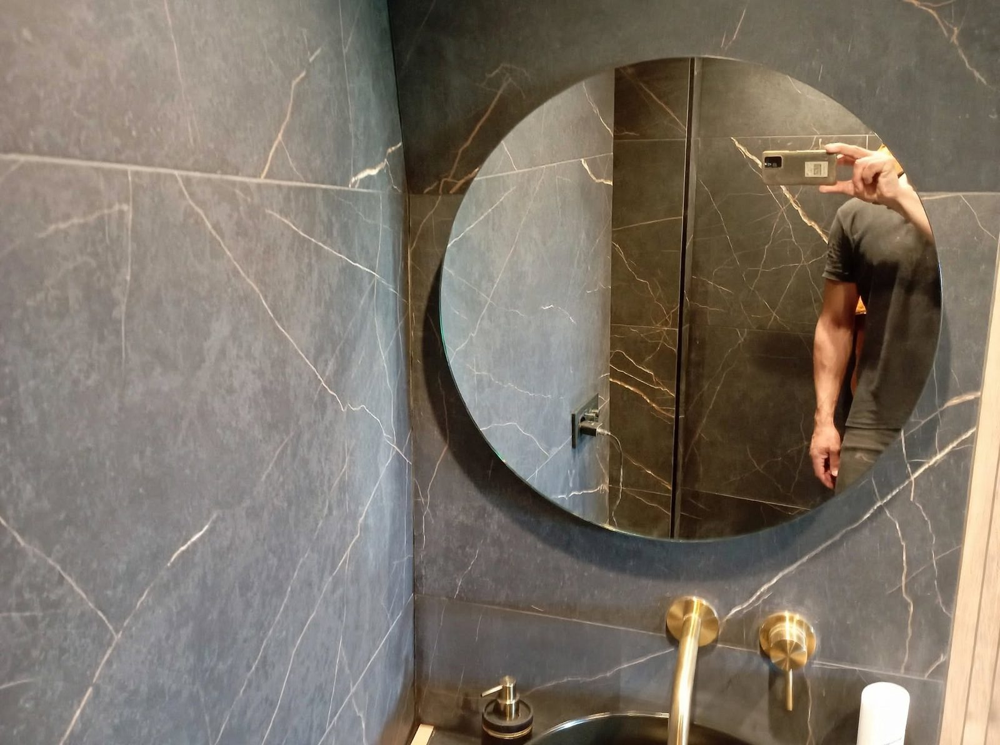
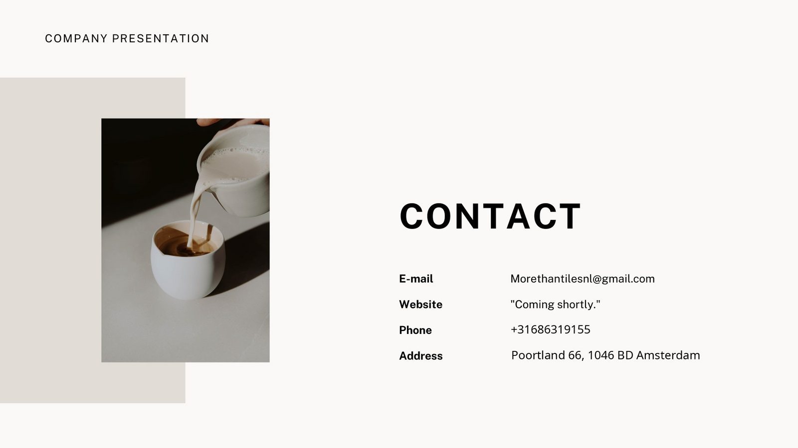

Tegelwerk · Renovatie · Amsterdam
Ruimtes transformeren met edele materialen, rustige lijnen en vakmanschap tot in het kleinste detail.
Bekijk de projectenPortfolio
Een selectie van recent werk — van de eerste waterdichting tot de laatste voeg. Klik op een project om alle foto’s te bekijken.

Over MoreThanTiles
MoreThanTiles staat voor tegelwerk en renovatie op hoog niveau. Elk project begint bij het materiaal: eerlijke steen, rustige lijnen en verhoudingen die kloppen — en eindigt pas als elke voeg, hoek en aansluiting precies zit waar hij hoort.
Van badkamers in marmerlook tot kleurrijk handgevormd tegelwerk en verzorgd metselwerk buiten: het werk wordt rustig en netjes uitgevoerd, met aandacht voor uw woning en een afwerking die jarenlang mooi blijft.
Wat wij doen
Complete badkamerrenovaties: waterdichting, grootformaat tegelwerk, douches en sanitair — afgewerkt tot in het kleinste detail.
Metselwerk en bakstenen muren, binnen en buiten. Strakke voegen en een verzorgde lijn, gebouwd om te blijven.
Vloeren en wanden in marmerlook, mozaïek of kleurrijke tegels — nauwkeurig gelegd, met duurzame voegen en een rustige uitstraling.
Contact
Vertel ons wat u wilt vernieuwen. We denken graag mee over materiaal, indeling en afwerking — en maken vrijblijvend een offerte op maat.
Stuur een WhatsApp-bericht